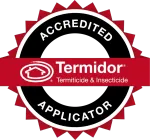

Termites.
Inspection, treatment, warranty.
Termidor-accredited termite inspections and treatment for Canberra homes and businesses. Early detection of hidden structural damage, targeted application, and a structural warranty on qualifying work — all from a fully licensed local team.
What you can't see is what costs the most.
Termites work behind walls, under floors and inside roof frames. Surface signs — warped boards, blistered paint, frass — usually appear after the structural timber is already compromised. A professional inspection turns that invisible risk into a written, actionable report.
Subterranean colonies move through plaster, masonry and concealed framing — a floorboard can look pristine while the joist beneath is hollow. Tapping, probing and moisture mapping reveal what visual checks alone will miss.
A live colony left alone grows slowly for the first season, then exponentially. Each year untreated, the eventual bill for structural repair compounds — treatment pays for itself many times over.
Qualifying termite work carries a structural warranty through our Termidor accreditations. Cover stays in force with the annual monitoring visit, written reports and barrier integrity checks.
Three steps from inspection
to long-term cover.
Each step ends in writing — a clear record of what we found, what we applied, and what comes next. Same-week availability across the ACT.
Inspection
A thorough on-site inspection covers the interior, subfloor, roof void and surrounding grounds. We tap, probe and visually check every accessible timber element. You receive a written report the same day.
Treatment
If activity is confirmed, we install a Termidor HE in-ground chemical barrier via precision trenching and rod injection around the full perimeter. Bait stations are placed where appropriate.
Annual monitoring
An annual revisit keeps the warranty current — re-inspecting bait stations, checking barrier integrity and re-issuing the compliance report, so small incursions are caught long before they become damage.
Termidor accredited.
Covered in writing.
Every TCB termite treatment is delivered by an accredited applicator and supported by the manufacturer program.

Broader scope.
Termite treatment often pairs with general pest cover or a pre-purchase building inspection. Explore our residential and commercial programmes.
Pre-Purchase Inspections
Buying or selling? An AS 4349.3 timber pest inspection before settlement gives you a written report to act on.
Residential
Family-safe termite and pest treatment for Canberra homes — written reports and the same operator where possible.
Commercial
Compliant termite and pest programmes for offices, hospitality, schools and strata — audit-ready reporting on request.
Book a termite inspection
before the damage.
Tell us about the property — pre-purchase, annual renewal, or you've noticed something concerning. We'll get back within one business day with a written quote and the next available slot.